Isi Panduan
- 1Urutan Persiapan UjianDari data master sampai hari pelaksanaan
- 2Beranda AdminRingkasan, kesiapan event, dan sesi login siswa
- 3Data Kelas dan Mata PelajaranRombel dan daftar mapel
- 4Guru, Staf, dan Hak AksesAkun pendidik dan izin setiap akun
- 5Data SiswaTambah, impor, ubah, dan sesi login
- 6Kelas MapelMemetakan mapel dan guru ke setiap kelas
- 7Event UjianPeriode ujian seperti PTS, PAS, atau ASAT
- 8Jadwal UjianSesi, token, pengawas, dan naskah soal
- 9Kartu Peserta dan Kartu MejaNomor ujian, password, dan QR login
- 10Kesiapan Bank Soal dan LaporanMemantau naskah dan mengambil hasil ujian
- 11Daftar Periksa Pekan UjianRingkasan tugas admin
Bab 1Urutan Persiapan Ujian
Setiap langkah membutuhkan data dari langkah sebelumnya. Kerjakan berurutan.
- Data Kelas dan Mata Pelajaran (Bab 3).
- Guru dan Staf, termasuk hak aksesnya (Bab 4).
- Data Siswa, masing-masing di kelasnya (Bab 5).
- Kelas Mapel: mapel apa diajarkan di kelas mana, oleh guru siapa (Bab 6).
- Event Ujian, misalnya PAS Ganjil (Bab 7).
- Jadwal Ujian untuk setiap kelas dan mapel, beserta pengawasnya (Bab 8).
- Guru menyusun dan mengunci bank soal. Admin memantau kesiapannya (Bab 10).
- Tautkan naskah ke jadwal bila belum tertaut otomatis (Bab 8).
- Cetak kartu peserta dan bagikan lewat wali kelas (Bab 9).
Bab 2Beranda Admin
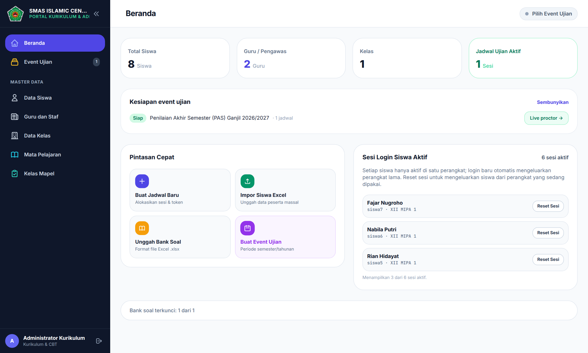
| Bagian | Fungsinya |
|---|---|
| Kartu angka | Jumlah siswa, guru dan pengawas, kelas, serta jadwal ujian aktif. |
| Kesiapan event ujian | Status tiap event beserta jumlah jadwalnya, dengan pintasan ke Live proctor. |
| Pintasan Cepat | Buat Jadwal Baru, Impor Siswa Excel, Unggah Bank Soal, dan Buat Event Ujian. |
| Sesi Login Siswa Aktif | Siswa yang sedang masuk di suatu perangkat. Reset Sesi mengeluarkan siswa dari perangkat itu. |
Menu Jadwal Ujian, Bank Soal & Kesiapan, dan Live Proctoring muncul setelah sebuah event dipilih (Bab 7). Klik Semua Event di menu kiri untuk kembali ke daftar event.
Bab 3Data Kelas dan Mata Pelajaran
Data Kelas
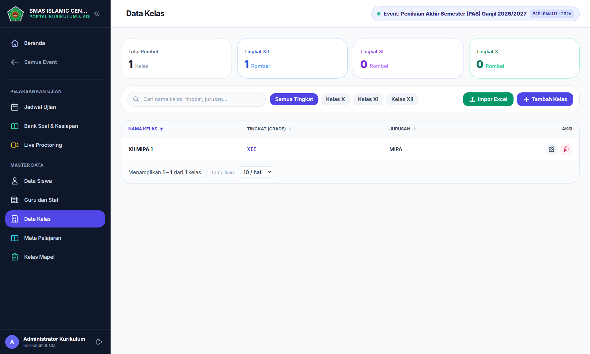
- Buka Data Kelas, klik Tambah Kelas.
- Isi Nama Kelas (contoh XII MIPA 2), pilih Tingkat X, XI, atau XII, dan isi Jurusan.
- Klik Simpan Kelas.
Untuk banyak kelas sekaligus, klik Impor Excel, unduh template, lalu isi kolom Nama Kelas, Tingkat (X/XI/XII), dan Jurusan/Program. Kelas dengan nama yang sudah ada dilewati.
Mata Pelajaran
Buka Mata Pelajaran, klik Tambah Mapel, lalu isi Kode Mapel (unik, tanpa spasi, contoh MAT-WJB-XII) dan Nama Mata Pelajaran. Impor Excel memakai kolom Kode Mapel dan Nama Mata Pelajaran; kode yang sudah ada dilewati.
Bab 4Guru, Staf, dan Hak Akses
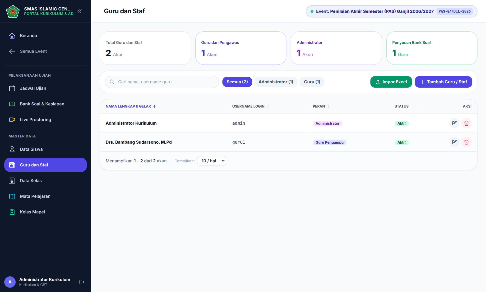
Menambah akun
- Klik Tambah Guru / Staf.
- Isi Nama Lengkap & Gelar, Username Login, dan Password. Bila password dikosongkan, dipakai guru123.
- Pilih template akses (lihat tabel), lalu simpan.
Impor Excel memakai kolom Nama Lengkap & Gelar, Username Login, Password Awal, dan Role (GURU/ADMIN). Username yang sudah terdaftar dilewati.
Template akses
| Template | Yang bisa dilakukan |
|---|---|
| Administrator | Seluruh fitur dan data. |
| Guru Pengampu | Mengelola bank soal mapel yang diampu (buat, unggah, ubah, kunci, cetak), melihat jadwal, mengawasi jadwal yang ditugaskan, dan mengekspor laporan. |
| Pengawas Ujian | Melihat jadwal, mengawasi jadwal yang ditugaskan, dan mengekspor laporan. |
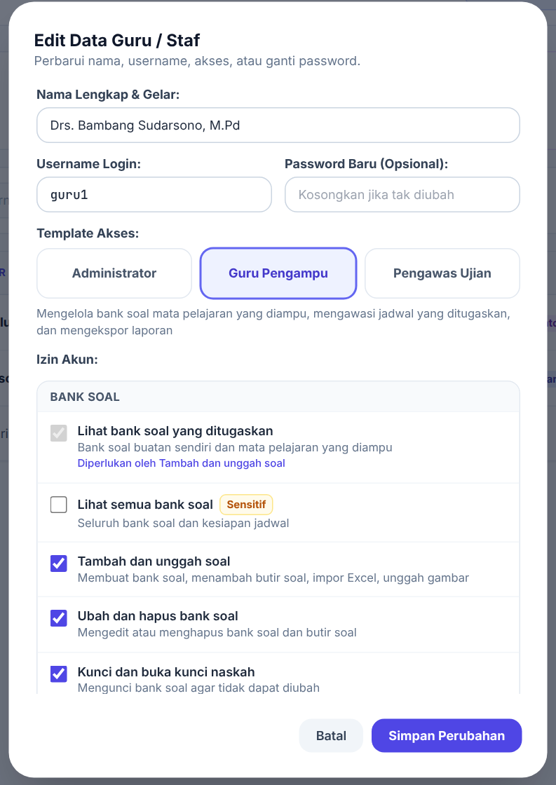
Setelah memilih template, izin bisa ditambah atau dikurangi satu per satu di bagian Izin Akun. Akun yang izinnya diubah bertanda Kustom; klik Kembalikan ke bawaan untuk mengembalikannya. Izin bertanda Sensitif membuka data luas, misalnya Lihat semua bank soal, Kendalikan semua jadwal, Kelola data master, dan Kelola akun pengguna. Berikan hanya bila benar-benar diperlukan.
Bab 5Data Siswa
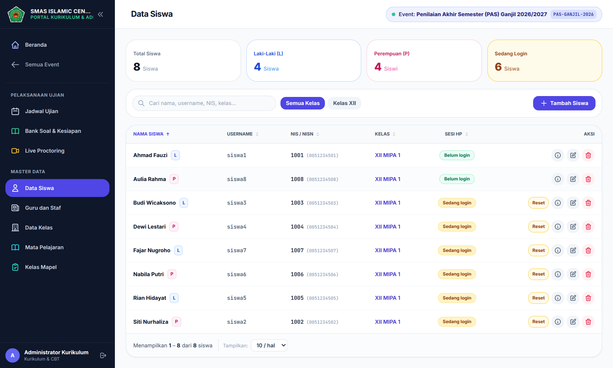
Menambah satu siswa
Klik Tambah Siswa, isi nama lengkap, username, password (bila kosong dipakai siswa123), NIS, NISN, rombel, dan jenis kelamin, lalu klik Simpan Siswa.
Mengimpor banyak siswa
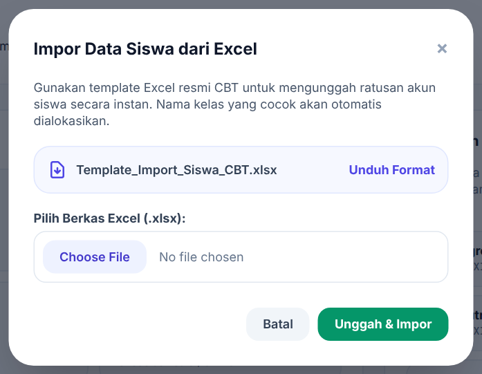
- Di Beranda, klik pintasan Impor Siswa Excel.
- Klik Unduh Format, lalu isi kolom NIS, NISN, Nama Lengkap Siswa, Nama Kelas, Jenis Kelamin (L/P), dan Password (opsional).
- Pilih berkas, lalu klik Unggah & Impor.
- Username siswa hasil impor adalah NIS-nya.
- NIS yang sudah terdaftar dilewati, tidak diperbarui.
- Password kosong diisi siswa123.
Mengubah, sesi login, dan menghapus
- Ikon (i): rincian siswa. Ikon pensil: ubah data atau ganti password.
- Sedang login di kolom Sesi HP berarti siswa sedang masuk di suatu perangkat. Tombol Reset mengeluarkannya dari perangkat tersebut.
- Hapus juga menghapus riwayat nilai siswa. Gunakan hanya untuk data yang salah input.
Bab 6Kelas Mapel
Kapan dipakai: awal tahun ajaran, dan setiap ada perubahan guru pengampu.
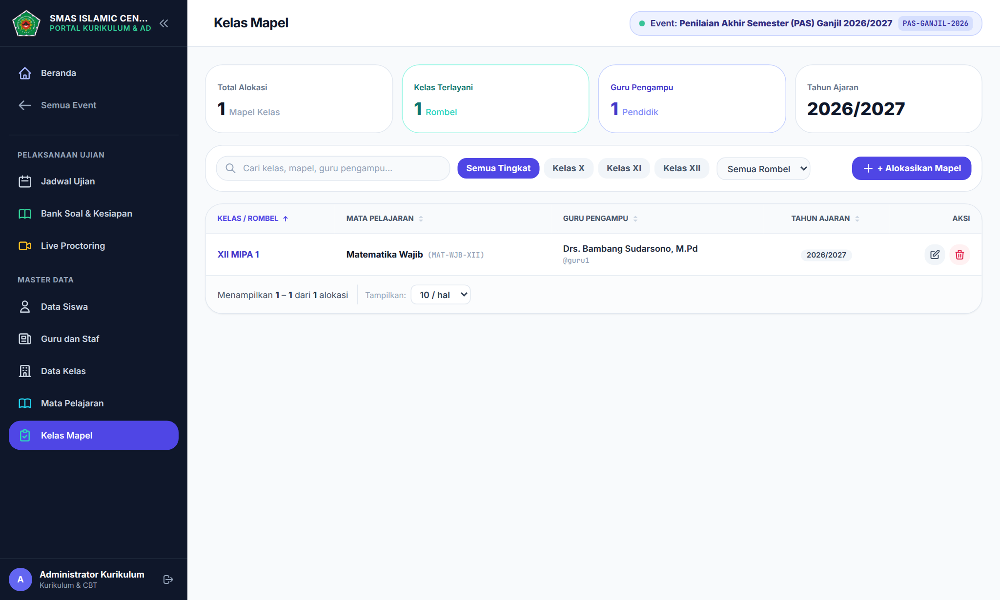
- Klik + Alokasikan Mapel.
- Pilih rombel, mata pelajaran, dan guru pengampu, lalu isi tahun ajaran.
- Simpan.
Data ini dipakai untuk empat hal: pilihan saat membuat jadwal, bank soal yang dapat dilihat guru, daftar tugas di Beranda guru, dan siapa yang boleh mengoreksi essay tiap kelas.
Bab 7Event Ujian
Kapan dipakai: sekali untuk setiap periode ujian, misalnya PTS, PAS, atau ASAT.
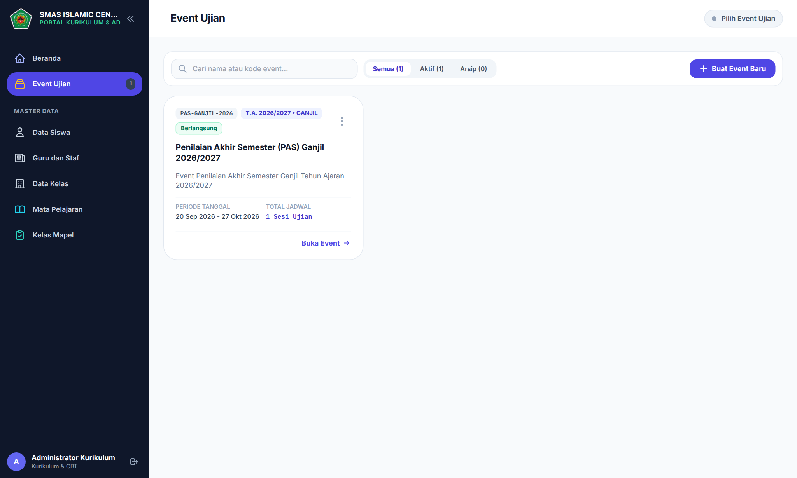
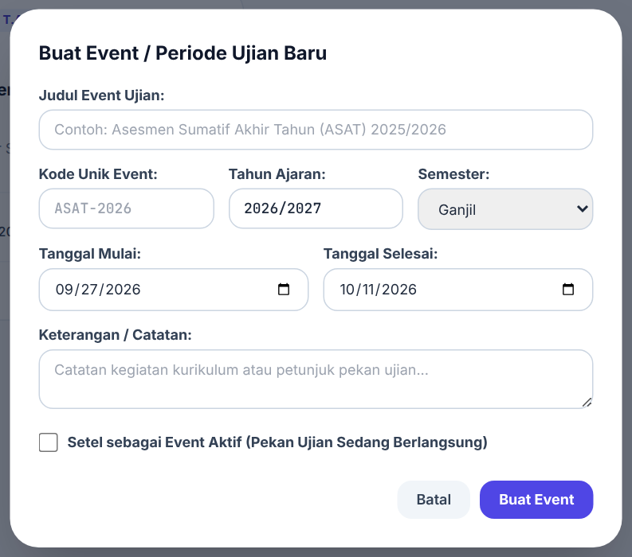
- Buka Event Ujian, klik Buat Event Baru.
- Isi judul, Kode Unik Event (contoh ASAT-2026), tahun ajaran, semester, tanggal mulai dan selesai, serta keterangan.
- Centang Setel sebagai Event Aktif bila pekan ujian sedang berlangsung, lalu simpan.
- Klik Buka Event untuk masuk ke jadwal, bank soal, dan pengawasan event ini.
Menu titik tiga
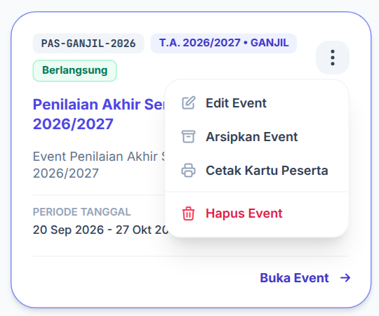
- Edit Event: ubah data event.
- Arsipkan Event / Aktifkan Event: event arsip tidak tampil bagi siswa, dan No. Ujian dari kartu peserta event itu tidak bisa dipakai login.
- Cetak Kartu Peserta: lihat Bab 9.
- Hapus Event: event yang masih memiliki jadwal aktif tidak dapat dihapus.
Bab 8Jadwal Ujian
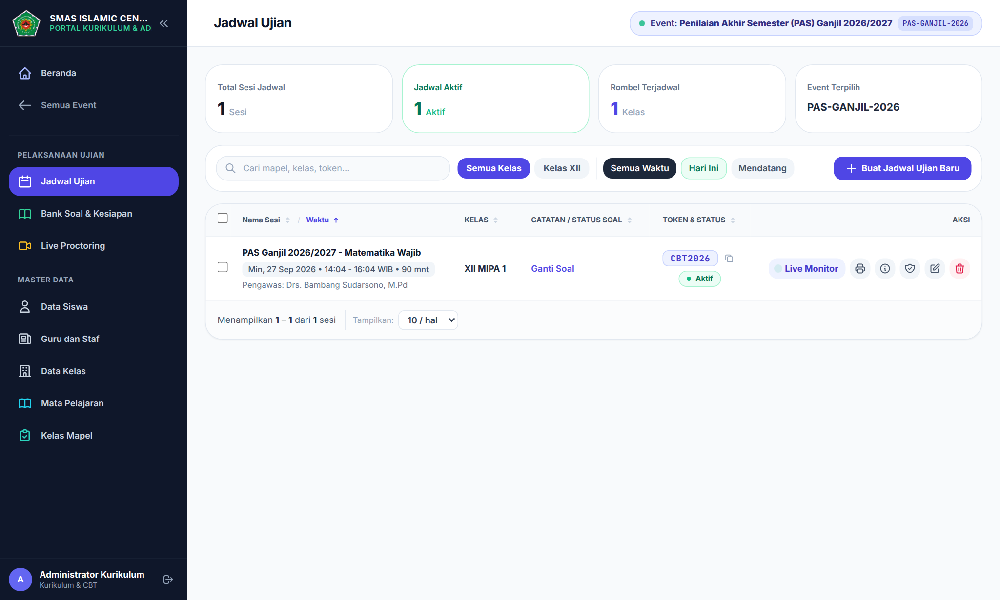
Membuat jadwal
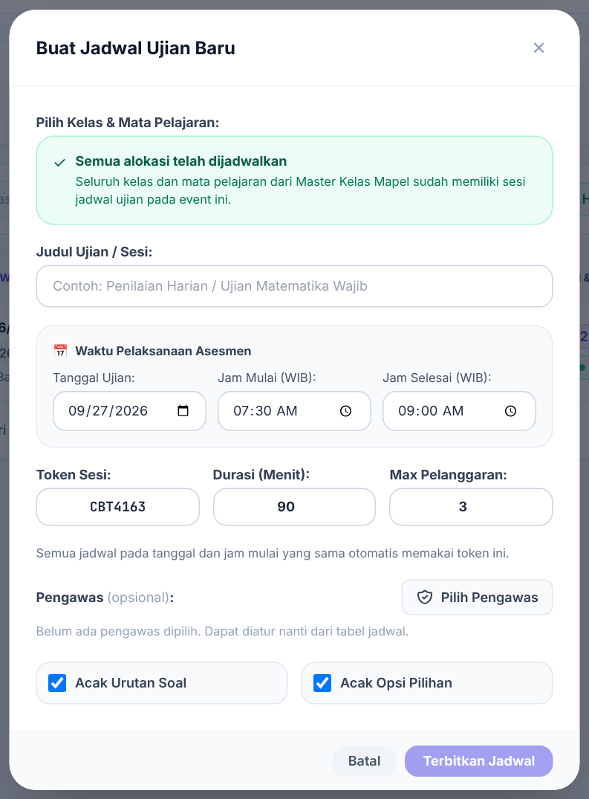
- Klik Buat Jadwal Ujian Baru.
- Pilih pasangan kelas dan mapel. Daftar hanya berisi alokasi Kelas Mapel yang belum dijadwalkan pada event ini.
- Isi judul sesi, tanggal, jam mulai, dan jam selesai (WIB).
- Periksa Token Sesi, isi Durasi dan Max Pelanggaran.
- Pilih pengawas (bisa diatur belakangan), atur pengacakan soal dan opsi, lalu klik Terbitkan Jadwal.
| Isian | Keterangan |
|---|---|
| Jam mulai / selesai | Batas kapan siswa bisa memulai ujian. Jadwal hanya tampil bagi siswa di antara dua jam ini. |
| Durasi | Waktu pengerjaan tiap siswa sejak ia memulai. Tidak melewati jam selesai. |
| Token Sesi | Kode yang diumumkan pengawas. Semua jadwal dengan tanggal dan jam mulai yang sama otomatis memakai token yang sama; mengubah token di satu jadwal ikut mengubah jadwal lain pada sesi itu. |
| Max Pelanggaran | Jumlah pelanggaran sebelum ujian siswa terkunci otomatis. |
| Acak Urutan Soal / Opsi | Urutan soal dan pilihan jawaban berbeda untuk tiap siswa, tetapi tetap sama bila siswa memuat ulang halaman. |
Tindakan pada baris jadwal
| Tombol | Fungsinya |
|---|---|
| Ganti Soal / Tautkan Soal | Menautkan bank soal ke jadwal. Hanya bank berstatus Terkunci yang dapat dipakai siswa. |
| Salin token | Ikon di samping token menyalinnya. |
| Aktif / Nonaktif | Klik label status untuk mengubahnya. Jadwal tidak dapat diaktifkan bila bank soal belum ditautkan atau belum dikunci. |
| Live Monitor | Membuka layar pengawasan jadwal ini. |
| Ikon printer | Mencetak daftar hadir dan berita acara. |
| Ikon (i) | Rincian jadwal dan tab Koreksi Essay. Tab ini hanya tampil bagi admin dan guru pengampu kelas + mapel jadwal; pengawas tidak dapat menilai essay. |
| Ikon perisai | Mengatur pengawas jadwal. |
| Ikon pensil / tempat sampah | Mengubah atau menghapus jadwal. |
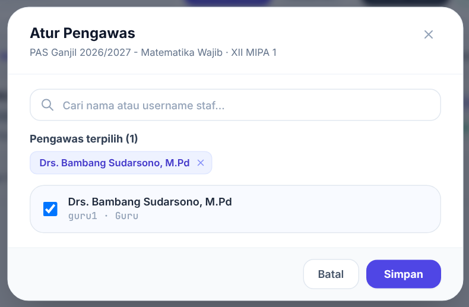
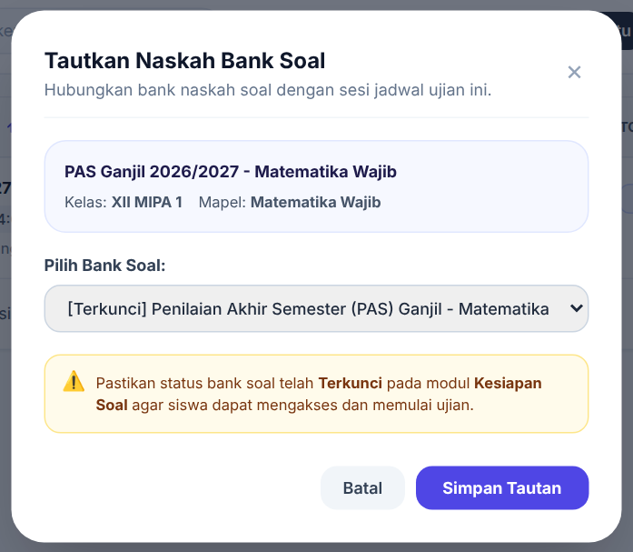
Tindakan untuk banyak jadwal
Centang beberapa jadwal, maka muncul bilah tindakan: Aktifkan Terpilih, Nonaktifkan, dan Samakan Token. Samakan Token memberi satu token baru untuk semua jadwal terpilih, termasuk jadwal lain yang tanggal dan jam mulainya sama.
Bab 9Kartu Peserta dan Kartu Meja
Kapan dipakai: setelah semua jadwal event dibuat, beberapa hari sebelum ujian.
- Di Event Ujian, klik menu titik tiga pada event, lalu Cetak Kartu Peserta.
- Bila muncul keterangan siswa belum memiliki nomor ujian, klik Buat Nomor Ujian.
- Pilih Kartu Peserta atau Kartu Meja, lalu saring per kelas bila perlu.
- Klik tombol cetak. Gunakan kertas A4, margin Default/None, skala 100%.
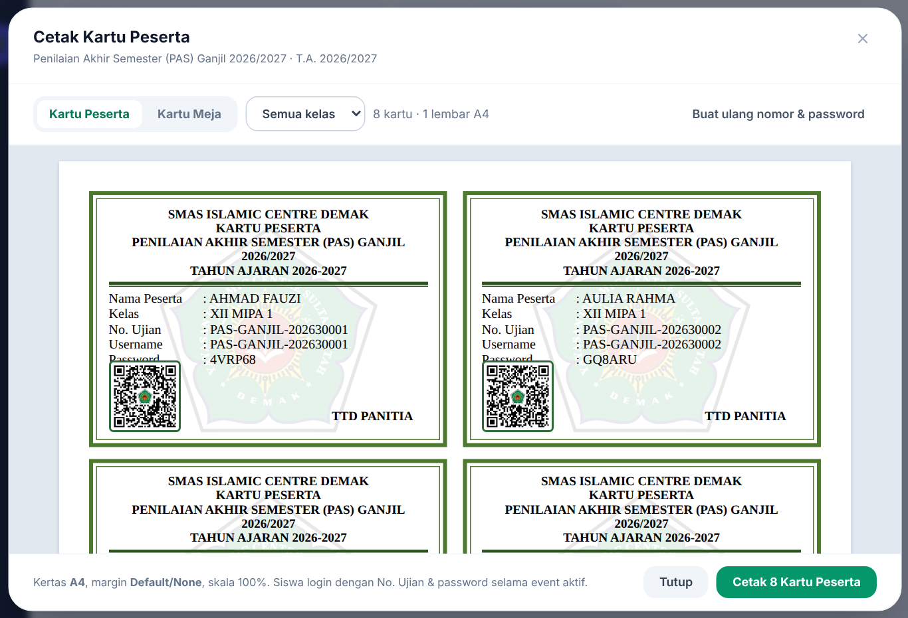
| Jenis kartu | Isi dan penggunaan |
|---|---|
| Kartu Peserta | Memuat password. Dibagikan lewat wali kelas dan dipegang siswa. Inilah yang dipakai siswa untuk login selama event aktif. |
| Kartu Meja | Tanpa password, No. Ujian dicetak besar. Ditempel di meja ujian. |
Peserta diambil dari siswa di kelas yang memiliki jadwal pada event ini. No. Ujian tersusun dari kode event, digit tingkat (X = 1, XI = 2, XII = 3), dan nomor urut. Password berupa 6 huruf dan angka acak. QR pada kartu membuka halaman login dengan No. Ujian terisi; password tidak ikut di QR.
Kartu hilang: buka Cetak Kartu Peserta, saring kelas siswa itu, lalu cetak ulang. Nomor dan password tidak berubah, jadi kartu lain tetap berlaku.
Bab 10Kesiapan Bank Soal dan Laporan
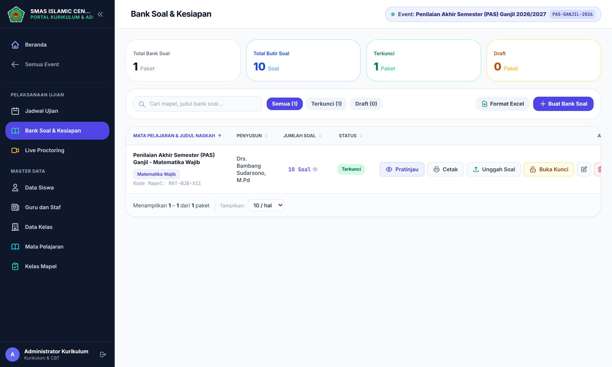
Gunakan filter Terkunci dan Draft untuk melihat naskah yang belum siap. Kartu di atas menunjukkan total bank soal, total butir, jumlah terkunci, dan jumlah draf. Cara menyusun, mengunci, dan mencetak naskah dijelaskan di Panduan Guru.
Laporan hasil ujian
Buka Live Proctoring, pilih sesi, lalu gunakan tombol Rekap Nilai (.xlsx), Berita Acara (.pdf), atau Cetak Dokumen. Rinciannya ada di Panduan Pengawas Bab 8. Nilai soal essay bertambah setelah guru menyelesaikan koreksi.
Bab 11Daftar Periksa Pekan Ujian
Dua minggu sebelum
- Data kelas, mapel, guru, dan siswa lengkap
- Kelas Mapel sesuai pembagian tugas mengajar
- Event ujian dibuat
- Jadwal seluruh kelas dan mapel diterbitkan
- Pengawas ditugaskan di setiap jadwal
Tiga hari sebelum
- Semua bank soal berstatus Terkunci
- Semua jadwal tertaut ke bank soal
- Kartu peserta dicetak dan dibagikan
- Kartu meja dicetak
Hari ujian
- Event berstatus aktif
- Jadwal hari ini berstatus aktif
- Pengawas bisa membuka Live Proctoring
- Admin siaga untuk mencetak ulang kartu hilang dan mereset sesi login
Setelah pekan ujian
- Guru menyelesaikan koreksi essay
- Rekap nilai dan berita acara diunduh
- Event diarsipkan